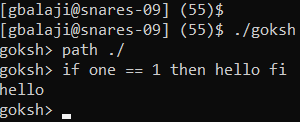

C Projects
Home
|
Python Projects
goksh
Made a
UNIX
shell clone with the following functionality:
Interactive mode (standard input mode) and batch mode (file input)
In-built exit, cd, and path commands
Program output redirection to file
Can execute programs in paths specified by path command
(/bin specified by default)
Custom if command:
if cmd == const then cmd fi

Demonstration of goksh path and if commands.
(one is a program that simply returns 1 and
hello is a program that prints "hello")